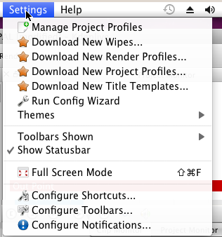
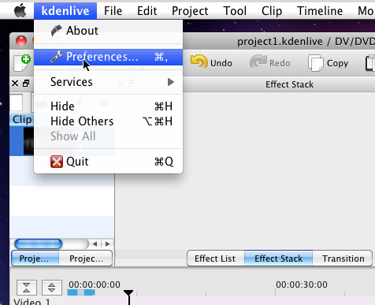

Settings Menu¶
Contents
Settings Menu - Mac OS X¶
On the Mac OS X build of Kdenlive the Settings menu does not contain the Configure Kdenlive menu item. The equivalent on Mac OS X is the Preferences menu item found under the Kdenlive menu.
Contents:
- Configure Kdenlive
- Configure Notifications
- Configure Shortcuts
- Raise widgets with shortcuts (window)
- Shortcuts for keyframe functions
- Command Bar
- Download New Render Profiles
- Upload/Share Render Profiles
- Download New Wipes
- Full Screen Mode
- Run Config Wizard
- Toolbars Shown
- Manage Project Profiles
- Download New Project Profiles
- Settings>Themes